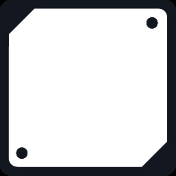

成就推断
紫印格（Purple-sealed）
成就要求：同一时刻有 5 枚以上处于「已揭示」状态的紫印格。可推断紫印为盘面可见的一种封印 / 状态标记，与揭示节奏强相关；具体是限制点击、改写邻域计数还是触发特效，请以游戏内图例与教程为准。
下列条目在玩法上类似「场上的道具或状态格」，多数可在成就条件中直接看到英文描述；具体数值与交互以客户端为准。
本页图片已改用 Steam 官方公开页面与成就页素材，并缓存到本地，离线可看；条目含义仍以游戏内正式文本为准。
成就要求：同一时刻有 5 枚以上处于「已揭示」状态的紫印格。可推断紫印为盘面可见的一种封印 / 状态标记，与揭示节奏强相关；具体是限制点击、改写邻域计数还是触发特效，请以游戏内图例与教程为准。
成就要求：同一时刻有 5 枚以上已揭示的红印格。与紫印并列的另一套封印视觉体系，常用于高风险提示或敌性机制叠层。
成就要求：在同一格上同时施加两种印（紫 + 红）。说明封印系统支持叠层或组合状态，推导时需把「印」当作独立规则源，而非单纯装饰。
成就与「场上同时存在 N 个激活的陷阱格」相关（N=5 与 N=10 两档）。与商店文案中「击败 Boss 后陷阱进入随机池」相呼应：陷阱格可视作随进度解锁的场地负面道具。
成就描述：揭示一枚基础格，且其周围八格全部为敌怪格。说明盘面存在与经典扫雷数字不同的敌性占用格，会挤占邻域信息结构。

成就描述：在不含敌怪格的前提下完成整板揭示（「Reveal the board with 0 enemies」）。用于对照理解「敌怪格」与「雷 / 危险」是否同一套逻辑——若与雷区并行存在，则推导维度增加。